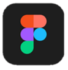
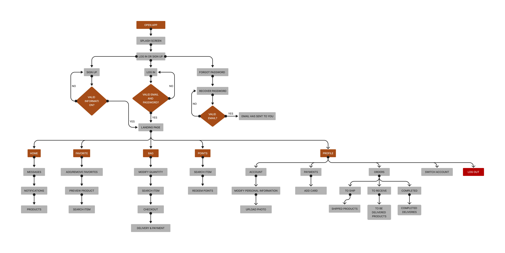
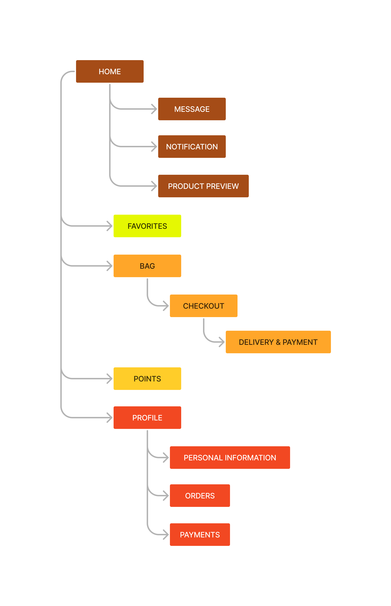
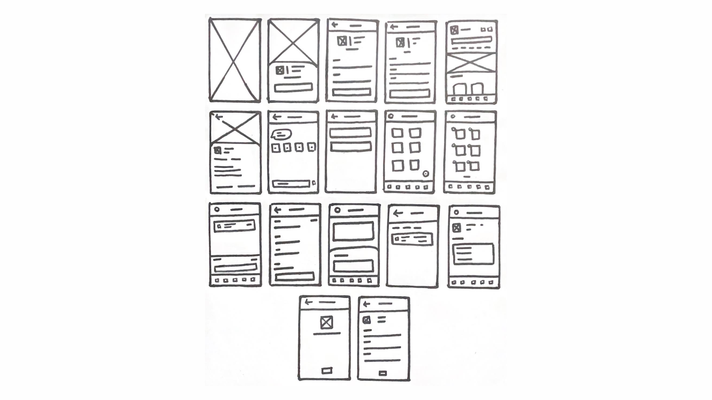
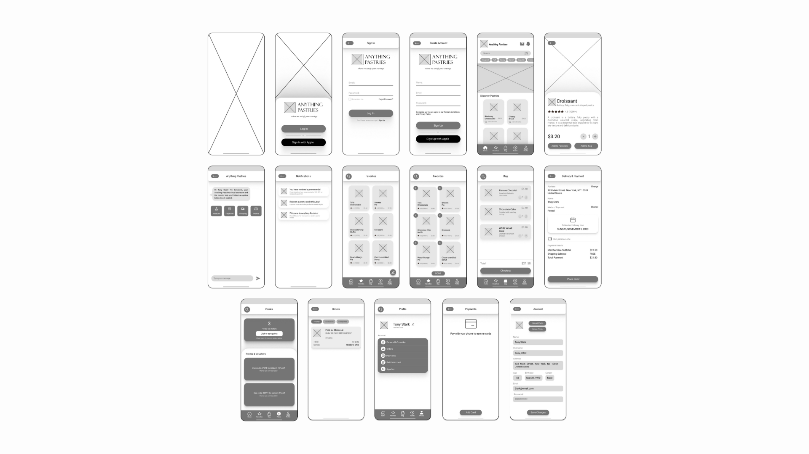
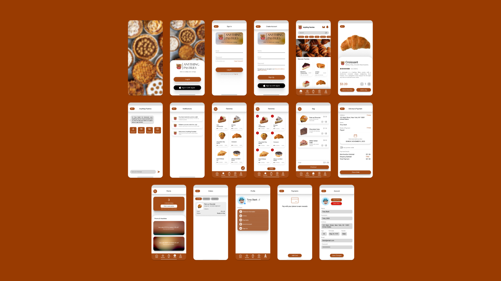
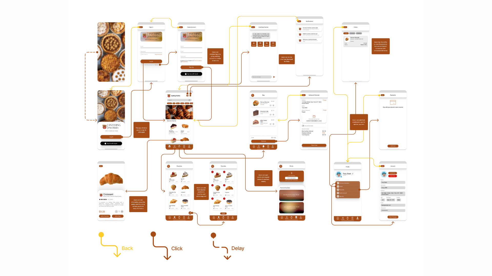
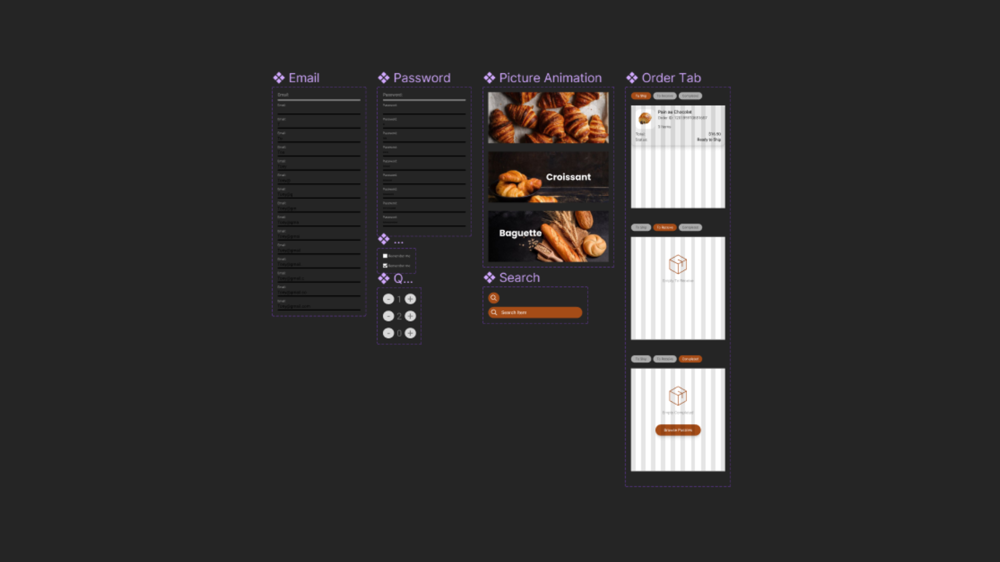

UX Researcher / UI/UX Designer

1 Month
In this in-depth UI/UX case study, I developed an application intended for a pastry shop where customers can order their desired pastries such as croissant, pies, cakes, and cookies. This case study showcases all the processes I've done in a step by step procedures from visualizing to a finished product. I also researched about the things that should be considered when creating an interface which is being able to provide users with a user-friendly application where users can use and navigate it easily without having a hard time thinking how to achieve a certain thing on the application.
The pastry shop application was developed with a design process that includes thorough analysis, including identifying the content of application and the flow of it, followed by the development of diagrams such as sitemaps and user flows. Before creating a user interface, it is vital to create wireframes for initial design and structure of the application. After that, user interfaces and prototypes were created to serve as a testing environment for user interactions and experiences, including feedback gathering. By this process, I created an application where it's providing not only a good design, but also providing a user-friendly and intuitive design that will allow users to navigate easily.
"Anything Pastries" is a fictional business originated from a generational history of artisanal baking, centered in a charming countryside community where ages-old recipes meet modern creativity. The bakery, which was founded by a dedicated baker who combines classic techniques with creative flavors, immediately became a local hit. Anything Pastries, known for its creative approach in which customers could order their desired pastries, launched a trend in personalized sweets experiences, creating a new industry norm.
In today's digital world, "Anything Pastries" is at a crossroads since the lack of an appropriate application restricts their reach and customer engagement. Without an internet presence, the bakery faces hurdles in appealing to a tech-savvy client base looking for ease and adaptation. They recognize the necessity for a user-friendly application that allows customers to explore, modify, and submit orders with ease. The lack of this digital interface limits their potential for expansion, limiting them from reaching a larger market and maintaining tech-savvy customers.
A vital aspect of my project is the development of a detailed user flow for the Anything Pastries Application.
This visual roadmap displayed the user's interaction path, allowing them a full understanding of their journey
from browsing pastries to completing orders. The user flow is a valuable technique for enhancing user experience
by predicting possible issues and optimizing critical touchpoints. Its participation in combining design decisions
with user expectations ensured that Anything Pastries' interface design simply suited to users' wants and objectives.
View User Flow on Figma

A thorough sitemap was essential in the construction of the Anything Pastries application, serving
as a visual roadmap of its design. By outlining the application's components and their relationships,
the sitemap provided a consistent user experience by navigating users through different varieties of
pastries, sweet selection, and order placement. This strategic tool not only directed the design process
but also assisted in intuitive navigation, increasing the overall usability of the program. Finally,
the sitemap's participation in the development of the app's structure complemented Anything Pastries'
commitment to creating a user-friendly and engaging platform.
View Sitemap on Figma

I started creating wireframes as it will serve as initial layout
and structure of the application where it displays all the navigation and interactions that can be done
by the customer. These visual guidelines helped the creation of a user-centric interface by turning
concepts into an overall architecture.
View Wireframes on Figma
The first thing I did was develop a low-fidelity wireframe using paper and draw out the ideas I had for the application's structure.

After creating a low-fidelity wireframe on a paper, I proceeded to create a high-fidelity wireframe using figma to create more detailed application for a pastry shop application.

Now that I've created the wireframe, I started working on the user interface, which will show how
the application would look. Colors, typography, icons, and pictures are significant visual components
of the User Interface that boost aesthetics and brand recognition. User Interface involves interaction
elements such as buttons, forms, and navigation, which allow users to engage with the design in a realistic way.
View User Interfaces on Figma

Moving on, establishing an easy navigation experience while integrating customer expectations with app
functionality was part of designing the Anything Pastries application map. This visual representation
demonstrated screen connectivity, offering a comprehensive view of user routes and interactions. By
specifying the flow, the application map enabled seamless transitions and a logical journey throughout
the application. The application map for Anything Pastries acted as a strategic tool that guided the design process.
View Application Map on Figma

#A54C17 (a deep brown color) combined with #FFFFFF (pure white) is a suitable color combination for a pastry shop application for various reasons. For starters, the brown color suggests warmth and richness, reminding baked foods and the welcoming aroma of freshly cooked pastries, creating a cozy mood within the app. Second, the sharp contrast with pure white improves readability by ensuring that text, menu options, and product information show out brightly, allowing consumers to easily navigate. Furthermore, the brown and white combination oozes elegance and cleanliness, perfectly harmonizing with the handmade and quality essence of "Anything Pastries," strengthening its brand image through the application's visual appeal. Lastly, I used Roboto as a font for application because of its balance between a contemporary look, readability, and versatility makes it a reliable and widely used font for applications across different platforms.
The logo that was used in the business was created using Canva, which shows a basket full of pastries. I think it is a good decision to make it as a logo because it really matches the vibe of the application and it perfectly fits on what the application conveys, and it is to sell pastries.
Below are the components I used to create a prototype, all of it are visible on the application.

The Anything Pastries prototype is the result of thorough planning and user-centered design, and it provides an interactive sample of the app's smooth ordering pastry experience. This dynamic model not only demonstrates the application's easy navigation and visual appeal, but it also acts as a great testing ground for improving user interactions and guaranteeing its efficacy. View Prototype on Figma